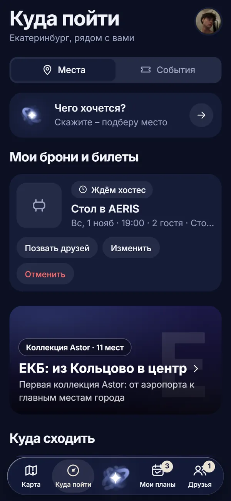
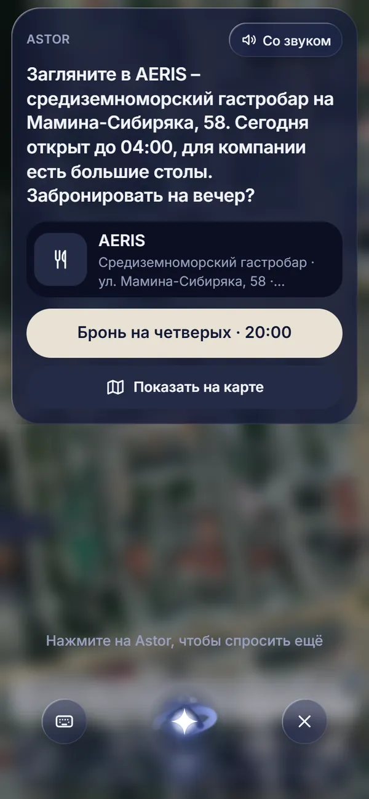
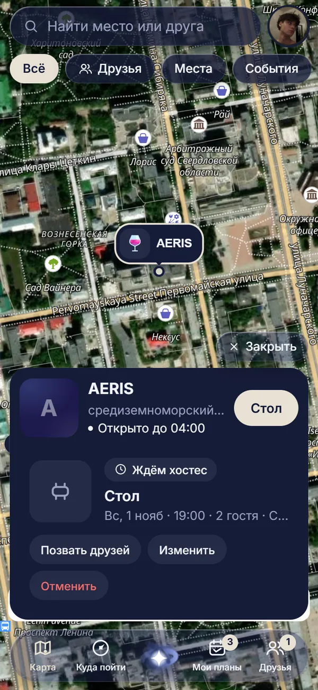
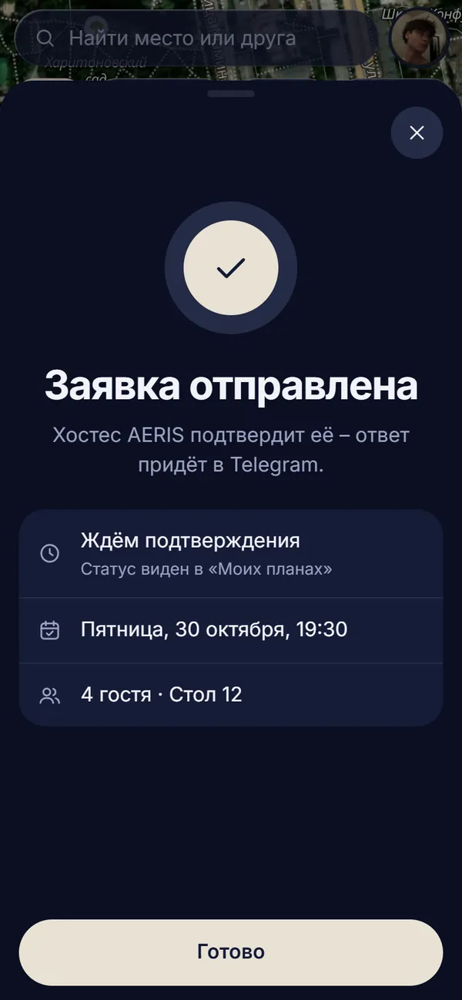

Astor / Astor Concierge
Консьерж гостя
Гостевая часть теперь в приложении Astor
Astor Concierge начинался как отдельный бот-помощник гостя. Теперь его роль выполняет приложение Astor в Telegram: подобрать место, посмотреть, что идёт в городе, забронировать стол и позвать друзей.
Для фестивалей, деловых программ и городских событий Astor Concierge остаётся консьержем под бренд события.

Для гостей
Что раньше делал консьерж, теперь в приложении
Помощник Astor в центре приложения: скажите своими словами, чего хочется. Бронь стола уходит команде заведения, подтверждает её ресторан.
-

Скажите, чего хочется
Голосом или текстом: «куда сходить вечером с друзьями?». Помощник подберёт места и события рядом.
-

Карточка места
Часы работы, адрес и маршрут. Подборка мест и афиша города – на вкладке «Куда пойти».
-

Бронь через команду ресторана
День, время и число гостей. Заявку подтверждает хостес, ответ приходит в Telegram.
Лента «Куда пойти» на сайте
Подборка заведений открывается и как обычная страница: выбор Astor идёт первым, у карточек – описание, адрес и ссылки на бизнес-ланч и сайт. Фото – только с разрешения заведения.
Открыть лентуДля событий
Консьерж для фестиваля, деловой программы или городского события
Организатору нужно провести гостя через расписание, локации, доступы, партнёрские активности и обращения к команде без перегруза администраторов.
-
Расписание и программа
Секции, спикеры, переносы и свободные места.
-
Карта площадки
Зоны, навигация и маршрут между ними.
-
Билеты и доступы
Проживание и закрытые зоны.
-
Обращения к координаторам
Сложный вопрос уходит ответственному человеку с контекстом: кто спрашивает, что уже уточнено и какое действие нужно.
-
Партнёры
Партнёрские предложения, контакты и обращения.
-
Отчёт после события
Темы, обращения, контакты и проблемы навигации.
Пиковые дни
За 1–2 дня до события вопросы приходят волной
Astor Concierge отвечает на повторяющиеся вопросы, а сложные обращения передаёт ответственному человеку.
До события
Как добраться, где жить, что входит в билет, как изменить категорию, где программа.
На входе
Доступы, регистрация, зоны, правила, карта, потерянные документы.
В программе
Секции, спикеры, расписание, переносы, свободные места, партнёрские активности.
Для особых гостей и партнёров
Закрытые зоны, встречи, столы, ужины, контакты ответственных координаторов.
После события
Итоги, материалы, обращения, контакты, отчёт по повторяющимся вопросам.
Под бренд события
Гость общается с консьержем события
Astor остаётся внутри, а внешний слой получает имя и тон заказчика.
Gastreet Concierge
Программа, спикеры, зоны, отели, билеты, партнёры и закрытые активности.
Forum Concierge
Деловая программа, участники, встречи, аккредитация и помощь координатора.
City Concierge
Городской маршрут, площадки, расписание, транспорт и обращения жителей или гостей.
Что можно добавить под событие
Профиль участника
Интересы, доступы, ограничения, выбранные активности.
Тихий гид
Маршруты, рекомендации, партнёры и полезные точки без перегруза.
Благодарность команде
Чаевые или благодарности сервисным командам, если формат это допускает.
Безопасные активности
Контроль правил, возрастных ограничений и ответственных лиц.
Формат проекта
Событие оценивается отдельно
Важны подготовка базы знаний, дежурство на пиковые дни, сценарии передачи команде и итоговая аналитика. Расскажите, где гости чаще всего теряются до и во время события: с этого удобно начинать настройку.
или на почту michael.poedinenko.mxr@gmail.com